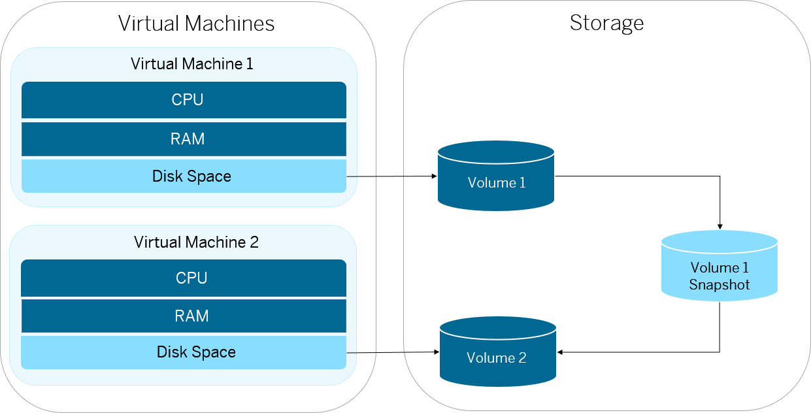

You can take a snapshot of an existing virtual machine volume in your account and use it to create a new virtual machine with the same file system thus saving any manual installation.
You have created a virtual machine.
Your account has sufficient quota for snapshots.
Each virtual machine has a volume – the storage behind the file system and all software installed on it. Using console client commands, you can create a snapshot of the volume of a virtual machine. This snapshot contains everything that was installed on the file system, but does not keep any running processes and runtime configurations. Then, you create a new virtual machine from this volume snapshot.
